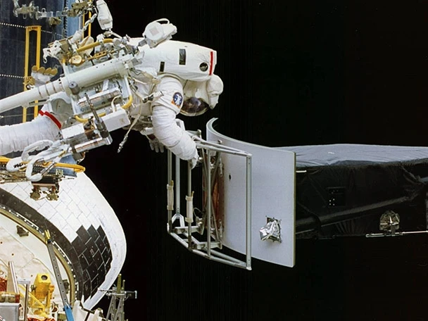
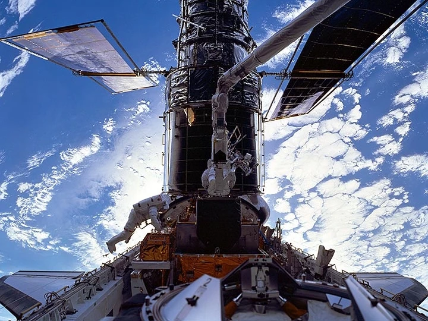
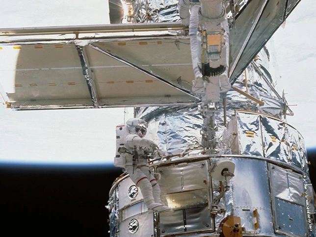
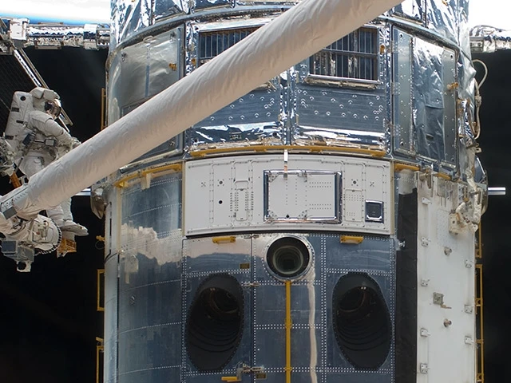

COSTAR, Corrective Optics Space Telescope Axial Replacement installed, replacing High Speed Photometer (HSP)
Wide Field Planetary Camera 2 (WFPC2) replaced Wide Field Planetary Camera (WFPC)
Solar Arrays replaced with Solar Arrays 2 (SA2)
Replacement of #1 Solar Array Drive Electronics (SADE)
Replace the #2 and #3 Rate Sensor Unit (two gyros each)
Replacement of two Gyro Electronic Control Units, which direct the RSUs
Replacement of eight electrical fuses
Installation of two new magnetometers
Installation of Goddard High Resolution Spectrograph Redundancy (GHRS) kit
Installation of two protective covers over original magnetometers

Astronaut Jeffrey Hoffman removes Wide Field and Planetary Camera 1 (WFPC 1) during change-out operations.
Servicing Mission 2 (STS-82)
February 11-21, 1997
Mission Highlights:
Space Telescope Imaging Spectrograph (STIS) replaced Faint Object Spectrometer (FOS)
Near Infrared Camera/Multi-Object Spectrometer (NICMOS) replaced Goddard High Resolution Spectrograph (GHRS)
Replacement of Fine Guidance Sensor #1 with modified spare with added capability for ground-controlled alignment corrections
Addition of an Optical Control Electronics Enhancement Kit (OCE-EK)
Replacement of #1 Engineering Science Tape Recorder (ESTR) with digital Solid State Recorder (SSR) and replacement of #2 ESTR with a spare ESTR unit
Replacement #1 of 4 Reaction Wheel Assemblies (RWA), with refurbished spare
Replacement of Data Interface Unit (DIU) #2 with modified and upgraded spare unit
Replacement of #2 Solar Array Drive Electronics (SADE) with refurbished unit
Replacement of more durable covers on Magnetic Sensing System (MSS)
Astronauts perform the final phases of Servicing Mission 2 spacewalk duty using the Shuttle's Remote Manipulator System (RMS).
Servicing Mission 3A (STS-103)
December 19-27, 1999
Mission Highlights:
Replacement of all three Rate Sensing Units (RSUs), each of which contains two gyroscopes
Installation of new computer, 20 times faster with six times more memory than its predecessor
Replacement of original reel-to-reel data recorder with digital Solid State Recorder (SSR) which is faster, more reliable and can store 10 times as much data
Replacement of #2 of 3 Fine Guidance Sensors (FGS) with refurbished unit
Replacement of failed #2 of 2 S-Band Single Access Transmitter (SSAT) used to relay data to the ground
Installation six Voltage/Temperature Improvement Kits (VIKs) on wiring between Solar Arrays and each battery to control charging of Hubble's batteries
Installation of Shell/Shield Replacement Fabric (SSRF) over the original Multi-Layer Insulation on Hubble’s forward shell and light shield to add thermal protection
Installation of Handrail Covers around the handrails above the Fine Guidance Sensor bay to prevent possible contamination to the Aft Shroud area from flaking handrail paint
Fit New Outer Blanket Layers (NOBLs) on equipment Bay 1

Astronauts C. Michael Foale, left, and Claude Nicollier (on Discovery's robotic arm) install a Fine Guidance Sensor (FGS) into a protective enclosure in the Shuttle's payload bay while orbiting above ocean and clouds.
Servicing Mission 3B (STS-109)
March 1-12, 2002
Mission Highlights:
Installation of Advanced Camera for Surveys (ACS), replacing the Faint Object Camera (FOC)
Installation of NICMOS Cooling System (NCS) comprised of two components, the NICMOS Cryogenic Cooler (NCC) and the NCS radiator, to revive the NICMOS instrument
Replace Solar Arrays 2 (SA2) with smaller, more efficient Solar Arrays 3 (SA3)
Replace the #2 of three Rate Sensor Units (each RSU contains two gyros)
Replace #1 of four Reaction Wheel Assemblies (RWA), part of Hubble’s pointing control system, with a refurbished unit
Replace Power Control Unit (PCU) to take full advantage of additional power generated by the new solar arrays
Fit New Outer Blanket Layers (NOBLs) on Bays 1, 9 and 10

Astronauts replace one of Hubble's two solar arrays, and a Diode Box Assembly. The space walkers also did some prep work for STS-109's other sessions of extravehicular activities.
Servicing Mission 4 (STS-125)
May 11-24, 2009
Mission Highlights:
Replace Wide Field Planetary Camera 2 (WFPC2) with Wide Field Camera 3 (WFC3)
Remove the Corrective Optics Space Telescope Axial Replacement (COSTAR) and install the Cosmic Origins Spectrograph (COS) in its place
Repair the Space Telescope Imaging Spectrograph (STIS)
Repair the Advanced Camera for Surveys (ACS)
Replace gyroscopes
Replace one Fine Guidance Sensor (FGS)
Replace batteries
Install New Outer Blanket Layers (NOBL) on bays 5, 7 and 8
Install Soft Capture Mechanism (SCM)
Replace Science Instrument Control and Data Handling (SIC&DH) unit

Astronauts replace one of Hubble's two solar arrays, and a Diode Box Assembly. The space walkers also did some prep work for STS-109's other sessions of extravehicular activities.